Thank you
Photo credits
Every photo here is free to use under the licence shown (Pexels or Unsplash). Photos are resized and colour-adjusted. The dark home-page pictures come from Pexels. A few dishes use the closest matching photo available.
 Spices in bowls (home hero)Kamakshi · Pexels License
Spices in bowls (home hero)Kamakshi · Pexels License Spices on spoons (our story)Christopher Welsch Leveroni · Pexels License
Spices on spoons (our story)Christopher Welsch Leveroni · Pexels License Matar paneer (menu)Prabal Pratap Singh · Pexels License
Matar paneer (menu)Prabal Pratap Singh · Pexels License Noodles (menu)ZAHID AKHTAR · Pexels License
Noodles (menu)ZAHID AKHTAR · Pexels License Ratatouille (menu)Deane Bayas · Pexels License
Ratatouille (menu)Deane Bayas · Pexels License Paneer tikka masala (recipe of the week)Anil Sharma · Pexels License
Paneer tikka masala (recipe of the week)Anil Sharma · Pexels License MocktailGilario Guevara · Pexels License
MocktailGilario Guevara · Pexels License Punjab section backgroundAmmy Singh · Pexels License
Punjab section backgroundAmmy Singh · Pexels License Chutney section backgroundI Own My Food Art · Pexels License
Chutney section backgroundI Own My Food Art · Pexels License Mood: QuickSkyler Ewing · Pexels License
Mood: QuickSkyler Ewing · Pexels License Mood: ComfortKunal Lakhotia · Pexels License
Mood: ComfortKunal Lakhotia · Pexels License Mood: SpicyZubeyir K · Pexels License
Mood: SpicyZubeyir K · Pexels License Mood: HealthyAndaru Firmansyah · Pexels License
Mood: HealthyAndaru Firmansyah · Pexels License Mood: FestiveJahra Tasfia Reza · Pexels License
Mood: FestiveJahra Tasfia Reza · Pexels License Mood: One-potAhmad No More · Pexels License
Mood: One-potAhmad No More · Pexels License Season: summerErick Ortega · Pexels License
Season: summerErick Ortega · Pexels License Season: monsoonkomal soni · Pexels License
Season: monsoonkomal soni · Pexels License Season: diwaliAmruta S · Pexels License
Season: diwaliAmruta S · Pexels License Season: winterVural Yavas · Pexels License
Season: winterVural Yavas · Pexels License Continent: asiaPixel Senses · Pexels License
Continent: asiaPixel Senses · Pexels License Continent: europeFederica Gioia · Pexels License
Continent: europeFederica Gioia · Pexels License Continent: africaZak Chapman · Pexels License
Continent: africaZak Chapman · Pexels License Continent: north-americaROMAN ODINTSOV · Pexels License
Continent: north-americaROMAN ODINTSOV · Pexels License Continent: south-americaMatthew Baxter · Pexels License
Continent: south-americaMatthew Baxter · Pexels License Continent: oceaniaBoryslav Shoot · Pexels License
Continent: oceaniaBoryslav Shoot · Pexels License North Indian cardJack Baghel · Pexels License
North Indian cardJack Baghel · Pexels License South Indian cardJack Baghel · Pexels License
South Indian cardJack Baghel · Pexels License Gujarati cardLalit Bali · Pexels License
Gujarati cardLalit Bali · Pexels License Maharashtrian cardAditya Mara · Pexels License
Maharashtrian cardAditya Mara · Pexels License Rajasthani cardDainik Tales · Pexels License
Rajasthani cardDainik Tales · Pexels License Bengali cardPinaki Panda · Pexels License
Bengali cardPinaki Panda · Pexels License Street food cardSharan Pagadala · Pexels License
Street food cardSharan Pagadala · Pexels License Punjabi CholeRimsha Noor · Unsplash License
Punjabi CholeRimsha Noor · Unsplash License Paneer Butter MasalaKalyani Akella · Unsplash License
Paneer Butter MasalaKalyani Akella · Unsplash License Masala DosaPavan Reddy · Unsplash License
Masala DosaPavan Reddy · Unsplash License Dal TadkaRashpal Singh · Unsplash License
Dal TadkaRashpal Singh · Unsplash License Mumbai Pav BhajiPavan Reddy · Unsplash License
Mumbai Pav BhajiPavan Reddy · Unsplash License Gulab Jamunjaikishan patel · Unsplash License
Gulab Jamunjaikishan patel · Unsplash License Vegetable Pad ThaiMarkus Winkler · Unsplash License
Vegetable Pad ThaiMarkus Winkler · Unsplash License JapchaeRyan Kwok · Unsplash License
JapchaeRyan Kwok · Unsplash License FalafelAnton · Unsplash License
FalafelAnton · Unsplash License Veg MomosAbhishek Sanwa Limbu · Unsplash License
Veg MomosAbhishek Sanwa Limbu · Unsplash License Avocado Cucumber MakiOmer Taha Cetin · Unsplash License
Avocado Cucumber MakiOmer Taha Cetin · Unsplash License Vegetable Spring RollsBudi Puspa Wijaya · Unsplash License
Vegetable Spring RollsBudi Puspa Wijaya · Unsplash License Margherita PizzaAurelien Lemasson-Theobald · Unsplash License
Margherita PizzaAurelien Lemasson-Theobald · Unsplash License RatatouilleMarjan Sadeghi · Unsplash License
RatatouilleMarjan Sadeghi · Unsplash License Patatas BravasNacho Carretero Molero · Unsplash License
Patatas BravasNacho Carretero Molero · Unsplash License Potato Cheese PierogiJakub Zerdzicki · Unsplash License
Potato Cheese PierogiJakub Zerdzicki · Unsplash License Koshariحامد طه · Unsplash License
Koshariحامد طه · Unsplash License Nigerian Vegetable Jollof RiceUmair Ali Asad · Unsplash License
Nigerian Vegetable Jollof RiceUmair Ali Asad · Unsplash License Moroccan Vegetable TagineDenis · Unsplash License
Moroccan Vegetable TagineDenis · Unsplash License Misir WatBrooke Balentine · Unsplash License
Misir WatBrooke Balentine · Unsplash License Vegetable CouscousDaniela · Unsplash License
Vegetable CouscousDaniela · Unsplash License Vegetarian TacosChad Montano · Unsplash License
Vegetarian TacosChad Montano · Unsplash License Guacamole with Tortilla ChipsZoshua Colah · Unsplash License
Guacamole with Tortilla ChipsZoshua Colah · Unsplash License Mac and CheeseLeanna Myers · Unsplash License
Mac and CheeseLeanna Myers · Unsplash License Vegetarian ChiliSvitlana · Unsplash License
Vegetarian ChiliSvitlana · Unsplash License Arepas with Black Beans and CheeseLeila Issa · Unsplash License
Arepas with Black Beans and CheeseLeila Issa · Unsplash License Vegetarian EmpanadasAnton · Unsplash License
Vegetarian EmpanadasAnton · Unsplash License Vegetarian FeijoadaArtur Kornakov · Unsplash License
Vegetarian FeijoadaArtur Kornakov · Unsplash License Australian Damper with Herb ButterFinbar.concaig · CC BY-SA 4.0
Australian Damper with Herb ButterFinbar.concaig · CC BY-SA 4.0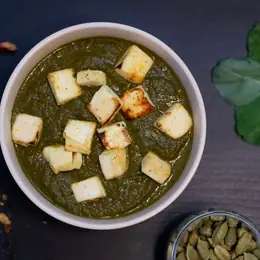
Palak PaneerKanwardeep Kaur · Unsplash License- Kadai PaneerRimsha Noor · Unsplash License
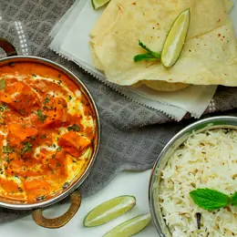
Shahi PaneerKalyani Akella · Unsplash License- Matar PaneerSanket Shah · Unsplash License
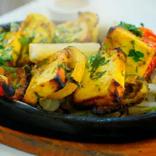
Paneer Tikka MasalaViktor Forgacs · Unsplash License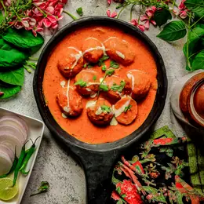
Malai KoftaKanika Kishore · Unsplash License Dal MakhaniAnil Sharma · Unsplash License
Dal MakhaniAnil Sharma · Unsplash License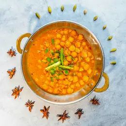
Chana MasalaNosh Caterers · Unsplash License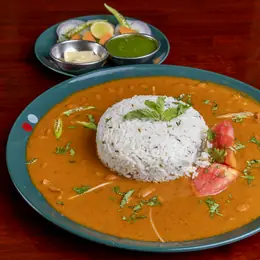
Rajma MasalaPaul · Unsplash License- Aloo GobiDr Muhammad Amer · Unsplash License
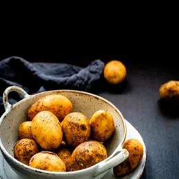
Dum AlooMonika Grabkowska · Unsplash License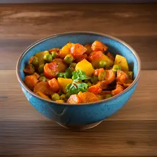
Aloo MatarRimsha Noor · Unsplash License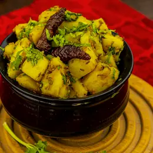
Jeera AlooAnil Sharma · Unsplash License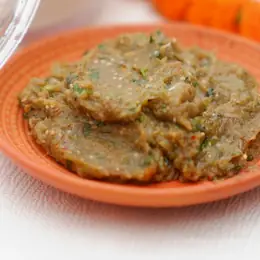
Baingan BhartaAdil Murshed · Unsplash License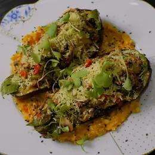
Bharwa Baingannrd · Unsplash License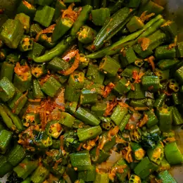
Bhindi MasalaZoshua Colah · Unsplash License- Mix Vegetable CurryiMattSmart · Unsplash License
- Vegetable KormaDipesh Gurav · Unsplash License
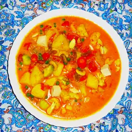
Navratan KormaMiansari66 · CC0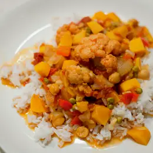
Vegetable JalfreziHeather Katsoulis · CC BY-SA 2.0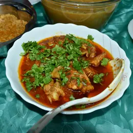
Gatte ki SabziSA AM · Unsplash License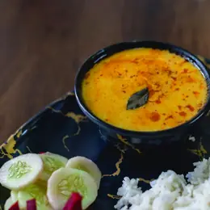
Kadhi Pakorafuseviews · Unsplash License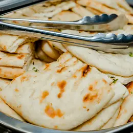
Amritsari KulchaRashpal Singh · Unsplash License- Stuffed ParathaRimsha Noor · Unsplash License
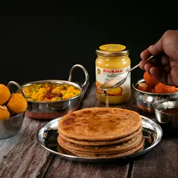
Aloo Paratharajat sarki · Unsplash License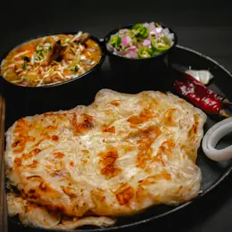
Paneer ParathaAnanthan Chithiraikani · Unsplash License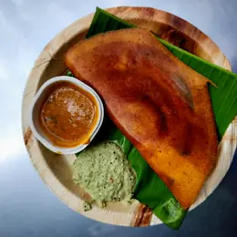
Mysore Masala DosaZoshua Colah · Unsplash License- Idli SambarPRATEEK JAISWAL · Unsplash License
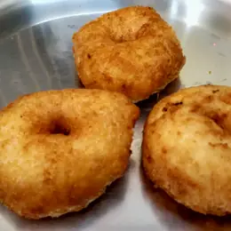
Medu VadaThamizhpparithi Maari · CC BY-SA 4.0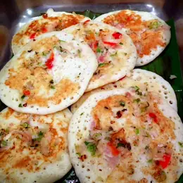
UttapamRamesh NG · CC BY-SA 2.0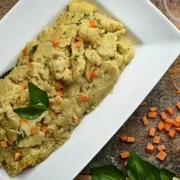
Vegetable UpmaMario Raj · Unsplash License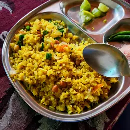
PohaZoshua Colah · Unsplash License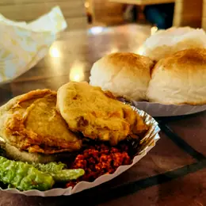
Vada PavZoshua Colah · Unsplash License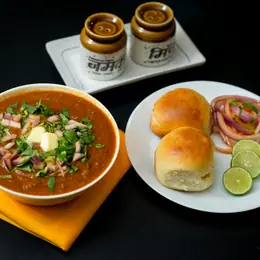
Misal PavShakti Rajpurohit · Unsplash License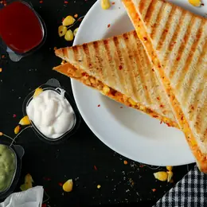
Bombay Veg SandwichPixzolo Photography · Unsplash License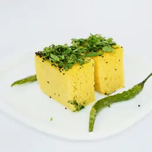
DhoklaMustafa Fatemi · Unsplash License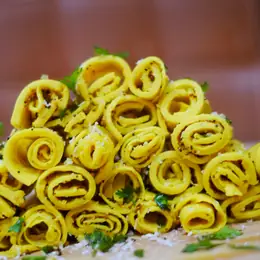
KhandviShivam Gupta · Unsplash License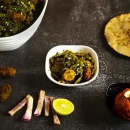
UndhiyuVD Photography · Unsplash License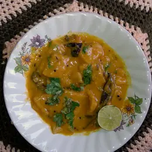
Dal DhokliKureshizeck · CC BY-SA 4.0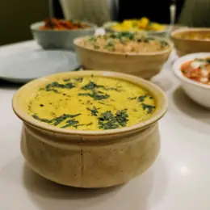
Gujarati KadhiZoshua Colah · Unsplash License Veg BiryaniOmkar Jadhav · Unsplash License
Veg BiryaniOmkar Jadhav · Unsplash License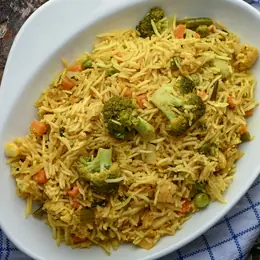
Vegetable PulaoMario Raj · Unsplash License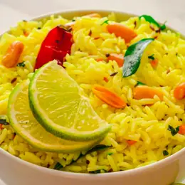
Lemon Ricejason roy · Unsplash License- Bisi Bele BathShreyak Singh · Unsplash License
 Chole BhatureZoshua Colah · Unsplash License
Chole BhatureZoshua Colah · Unsplash License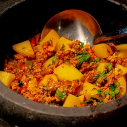
Aloo PostoMarlom Veloso · Unsplash License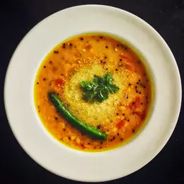
Cholar DalPkd2512 · CC BY-SA 4.0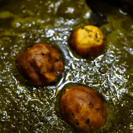
Sarson da SaagGolboo Maghooli · Pexels License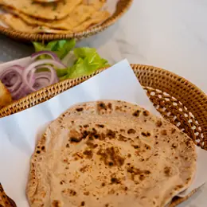
Makki di RotiRathaphon Nanthapreecha · Pexels License- Gobhi Parathaaksinfo7 universe · Pexels License
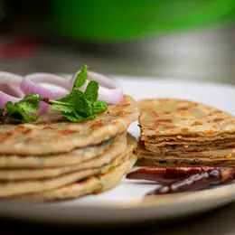
Mooli ParathaMohammad Fahim · Pexels License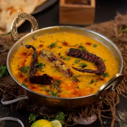
Langar wali DalAnil Sharma · Pexels License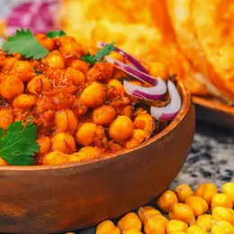
Pindi CholeChait Goli · Pexels License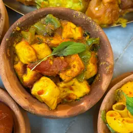
Paneer BhurjiVipinVihari Murari Das · Pexels License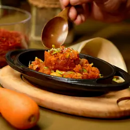
Gajar ka HalwaSaveurs Secretes · Pexels License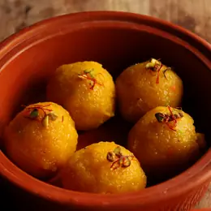
PinniJahra Tasfia Reza · Pexels License Meethe Chawalhelia ghaharian · Pexels License
Meethe Chawalhelia ghaharian · Pexels License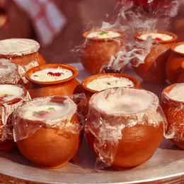
Punjabi LassiDeepak Maurya · Pexels License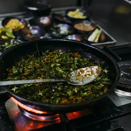
Ker SangriRachel Claire · Pexels License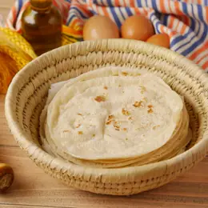
Bajre ki RotiTowfiqu barbhuiya · Pexels License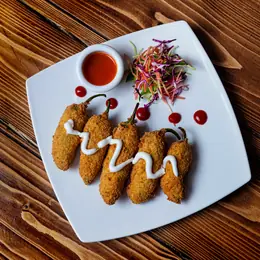
Mirchi VadaSalman Khan · Pexels License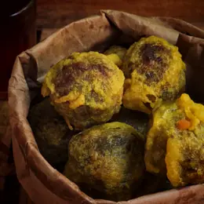
Pyaaz KachoriSaveurs Secretes · Pexels License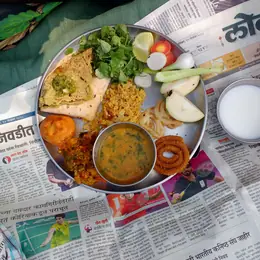
Dal Baati ChurmaAbhiram Kodape · Pexels License- Panchmel DalVivaan Rupani · Pexels License
- Papad ki SabziAnand Raj · Pexels License
- Mangodi ki SabziJer Chung · Pexels License
- Gatte ka PulaoAnthony Leong · Pexels License
- Mawa KachoriTamanna Rumee · Pexels License
- GhevarTowfiqu barbhuiya · Pexels License
- MalpuaKateryna Hnidash · Pexels License
- Moong Dal HalwaSaveurs Secretes · Pexels License
- Churma LadooKiro Wang · Pexels License
- BalushahiTamanna Rumee · Pexels License
- ShuktoLoren Castillo · Pexels License
- Begun BhajaZak Chapman · Pexels License
- Dhokar DalnaPranjall Kumar · Pexels License
- LuchiSaveurs Secretes · Pexels License
- Chhanar DalnaPrabal Pratap Singh · Pexels License
- Mishti DoiDeepak Maurya · Pexels License
- RasgullaDivya Jain · Pexels License
- SandeshMumtahina Tanni · Pexels License
- Payeshhelia ghaharian · Pexels License
- Bengali Aloor DomSaveurs Secretes · Pexels License
- Methi TheplaPranjall Kumar · Pexels License
- HandvoHarish .P · Pexels License
- Sev Tameta nu ShaakAnna Tarazevich · Pexels License
- Fafda JalebiLara Jameson · Pexels License
- PatraGuriqbal Billing · Pexels License
- Methi na Gotamukesh kumar · Pexels License
- ShrikhandNuruddin Bharmal · Pexels License
- BasundiPure Punjabi · Pexels License
- MohanthalPure Punjabi · Pexels License
- Puran PoliUMUT DAĞLI · Pexels License
- Sabudana KhichdiThomas Nahar · Pexels License
- ThalipeethSohani Kamat · Pexels License
- Bharli VangiKunal Lakhotia · Pexels License
- Matki UsalNourishment DECODED · Pexels License
- Kothimbir Vadieat kubba · Pexels License
- Ukadiche ModakNatalie Bond · Pexels License
- SheeraYan Krukau · Pexels License
- AamrasSwapnil Potdar · Pexels License
- RasamDino Uniyal · Pexels License
- Semiya Payasamhelia ghaharian · Pexels License
- Mysore PakRachel Claire · Pexels License
- AvialNataliya Vaitkevich · Pexels License
- Curd RiceDigital Buggu · Pexels License
- Pani PuriRathaphon Nanthapreecha · Pexels License
- Bhel PuriUday Agastya · Pexels License
- Sev PuriShahbaz Ansari · Pexels License
- Aloo Tikki ChaatVinit Jain · Pexels License
- Papdi ChaatMuhammad Khawar Nazir · Pexels License
- Raj KachoriKartik Kacha · Pexels License
- Punjabi SamosaSutee Pheera · Pexels License
 Mushroom RisottoMax Griss · Unsplash License
Mushroom RisottoMax Griss · Unsplash License- Eggplant ParmigianaMoira Nazzari · Unsplash License
- MinestroneVictoria Shes · Unsplash License
- Pasta Primaveraengin akyurt · Unsplash License
- Potato Gratin DauphinoisSome Tale · Unsplash License
 French Onion Soupsheri silver · Unsplash License
French Onion Soupsheri silver · Unsplash License- Spanish Tortilla de Patatasblackieshoot · Unsplash License
 Vegetable PaellaAntonella Vilardo · Unsplash License
Vegetable PaellaAntonella Vilardo · Unsplash License Greek SpanakopitaAnastase Maragos · Unsplash License
Greek SpanakopitaAnastase Maragos · Unsplash License- Briam, Greek Roasted VegetablesLouis Hansel · Unsplash License
 Vegetarian MoussakaArne Buss · Unsplash License
Vegetarian MoussakaArne Buss · Unsplash License- Falafel with Pita and HummusWera Durakova · Unsplash License
- Mushroom StroganoffCorreen · Unsplash License
- Hungarian Mushroom PaprikashMarkus Winkler · Unsplash License
- Irish ColcannonVegaTeam · CC BY 2.0
- Swedish Vegetable Meatballs with Lingonberry SauceBakd&Raw by Karolin Baitinger · Unsplash License
- Ful MedamesKrista · CC BY 2.0
- Taameya, Egyptian FalafelLudovic Avice · Unsplash License
 Harira, Vegetarian VersionMiansari66 · CC0
Harira, Vegetarian VersionMiansari66 · CC0- Tunisian Lablabimartin becker · Unsplash License
- Kafteji, Vegetarian VersionTouzrimounir · CC BY-SA 4.0
- Shakshuka without Egg, Chickpea VersionHermes Rivera · Unsplash License
- Atkilt Wat, Ethiopian Cabbage-Potato-Carrot StewPablo Arroyo · Unsplash License
 Shiro Wat, Ethiopian Chickpea StewTemesgen Woldezion; edited by Merhawie Woldezion · CC BY-SA 2.5
Shiro Wat, Ethiopian Chickpea StewTemesgen Woldezion; edited by Merhawie Woldezion · CC BY-SA 2.5 Injera with Vegetarian Vegetable PlatterPeggyIdog00d · CC BY-SA 4.0
Injera with Vegetarian Vegetable PlatterPeggyIdog00d · CC BY-SA 4.0- Githeri, Maize and Bean StewAlimentos Fotogénicos · Unsplash License
- Sukuma Wiki with BeansKim Daniels · Unsplash License
- Matoke, Plantain Stew Vegetarian VersionAaron De Wit · Unsplash License
- Efo Riro, Spinach Stew Vegetarian VersionBruno van der Kraan · Unsplash License
- Ghanaian Red Red, Beans and PlantainTobias Nii Kwatei Quartey · Unsplash License
- South African Chakalaka with PapAdalia Botha · Unsplash License
- Mushroom QuesadillasLottie Griffiths · Unsplash License
 Vegetarian EnchiladasCésar O'neill · Unsplash License
Vegetarian EnchiladasCésar O'neill · Unsplash License- Chilaquiles Verdes, No Egg VersionFernando Andrade · Unsplash License
- Black Bean Burrito BowlRosalind Chang · Unsplash License
- Vegetable TamalesAndy Hay · Unsplash License
 Elote, Mexican Street Cornmicheile henderson · Unsplash License
Elote, Mexican Street Cornmicheile henderson · Unsplash License- Sopa de Lima, Vegetarian VersionZayed Ahmed Zadu · Unsplash License
- Vegetarian Pozole VerdePabliotecario · CC BY-SA 4.0
- Three Sisters Stew, Corn Bean SquashGreen And Great · Unsplash License
- Succotashjaikishan patel · Unsplash License
- Southern Cornbread, Vegetarian VersionEugenia Pan'kiv · Unsplash License
 Veggie Burger with Sweet Potato FriesTheo Crazzolara · Unsplash License
Veggie Burger with Sweet Potato FriesTheo Crazzolara · Unsplash License Canadian Poutine, Vegetarian Gravy VersionTaine Noble · Unsplash License
Canadian Poutine, Vegetarian Gravy VersionTaine Noble · Unsplash License- Maple-Roasted Root VegetablesBrett Wharton · Unsplash License
- Jamaican Ital StewZoshua Colah · Unsplash License
- Trinidadian DoublesMario Raj · Unsplash License
 HumitasTai's Captures · Unsplash License
HumitasTai's Captures · Unsplash License- Locro de ZapalloMonika Grabkowska · Unsplash License
- ProvoletaChris Kursikowski · Unsplash License
 Pao de QueijoRicardo Bacelar · Unsplash License
Pao de QueijoRicardo Bacelar · Unsplash License- Moqueca de Banana da TerraEiliv Aceron · Unsplash License
- QuibebeMarlom Veloso · Unsplash License
 Acai BowlEiliv Aceron · Unsplash License
Acai BowlEiliv Aceron · Unsplash License- Sopa de QuinoaJametlene Reskp · Unsplash License
- Causa Rellena, Vegetarian VersionLouis Hansel · Unsplash License
- Cau Cau, Potato VersionZayed Ahmed Zadu · Unsplash License
 Papa a la HuancainaTARN BENJA · Unsplash License
Papa a la HuancainaTARN BENJA · Unsplash License- Sonso de YucaYunFengQ · Unsplash License
- Salteñas, VegetableLuc Ori · Unsplash License
- ChipaLuan Hobold · Unsplash License
- Sopa Paraguaya, Vegetarian VersionKeriliwi · Unsplash License
- CachapasGirl with red hat · Unsplash License
- Sopaipillas, PumpkinTricia Timney · Unsplash License
 Smashed Avocado ToastDoug Bagg · Unsplash License
Smashed Avocado ToastDoug Bagg · Unsplash License Roast Pumpkin and Feta SaladBakd&Raw by Karolin Baitinger · Unsplash License
Roast Pumpkin and Feta SaladBakd&Raw by Karolin Baitinger · Unsplash License- Vegetarian Sausage RollsSandie Clarke · Unsplash License
- Cheese and Vegemite ToastieAnna Jakutajc-Wojtalik · Unsplash License
 Sweet Potato with Macadamia CrumbleHermes Rivera · Unsplash License
Sweet Potato with Macadamia CrumbleHermes Rivera · Unsplash License Halloumi BurgerBenoît Deschasaux · Unsplash License
Halloumi BurgerBenoît Deschasaux · Unsplash License Mushroom PieJelleke Vanooteghem · Unsplash License
Mushroom PieJelleke Vanooteghem · Unsplash License- Savoury Lamington Bites, Cheese and HerbYansi Keim · Unsplash License
- Wattleseed Banana BreadJeff Siepman · Unsplash License
- Kumara and Chickpea CurryÁlvaro Bernal · Unsplash License
- Rewena Bread, Maori Potato BreadVicky Ng · Unsplash License
- Hangi-style RootsYaya The Creator · Unsplash License
- Cheese and Herb SconesRyu Orn · Unsplash License
- Laplap, Vegetable VersionZoshua Colah · Unsplash License
- Fijian Dhal and RotiVD Photography · Unsplash License
- Kokoda, Vegetarian VersionMarkus Winkler · Unsplash License
- Lu Pulu, Vegetarian VersionMichael Navarro · Unsplash License
- PalusamiKwang Javier · Unsplash License
- Sweet Potato and Coconut BowlMax Saeling · Unsplash License
- Aam PannaHaydn Golden · Unsplash License
- Masala ShikanjiLaura Chouette · Unsplash License
- Mango LassiShoeib Abolhassani · Unsplash License
- Thai Iced TeaMarkus Winkler · Unsplash License
- Moroccan Mint TeaMartin Zangerl · Unsplash License
- KarkadeGabi Miranda · Unsplash License
- Sparkling Elderflower LemonadeCharity Beth Long · Unsplash License
- Virgin Mojitokimia kazemi · Unsplash License
- Virgin Pina ColadaDaniel Lloyd Blunk-Fernandez · Unsplash License
- Agua de JamaicaCrystal Tubens · Unsplash License
- Brazilian LemonadeFrancesca Hotchin · Unsplash License
- Kiwi CoolerLouis Hansel · Unsplash License